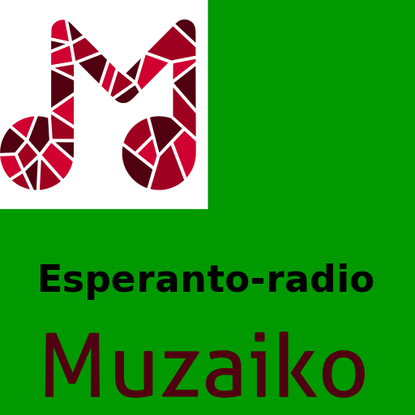

Radio kun 27 Esperanto-kanaloj kaj podkastoj el la tuta mondo — en unu apo:
poŝtelefono (Android), komputilo kaj retumilo.
EsperantoRadio kunigas dudek sep radiokanalojn kaj podkastojn en Esperanto el la tuta mondo en unu unuecan sperton: kanala superrigardo, rekta elsendo, podkastoj, elŝutoj, plej ŝatataj, serĉo kaj vekhorloĝo. La projekto estas forko de la dana DR Radio-apo kaj estas eldonita sub la malferma permesilo GPL-3.0.
Ĉi tie troviĝas la publikaj dosieroj de nia arkiv-servilo — la riĉigitaj RSS-fluoj (kun AI-rezultoj por elsendoj sen priskribo) kaj la kanalkonfiguro, kiujn la apo povas elŝuti:
La fonto de la servilo estas en la deponejo: server/
(Kotlin-konstruilo :server:arkivKonstruilo; detaloj en la skill servilo-arkivo).